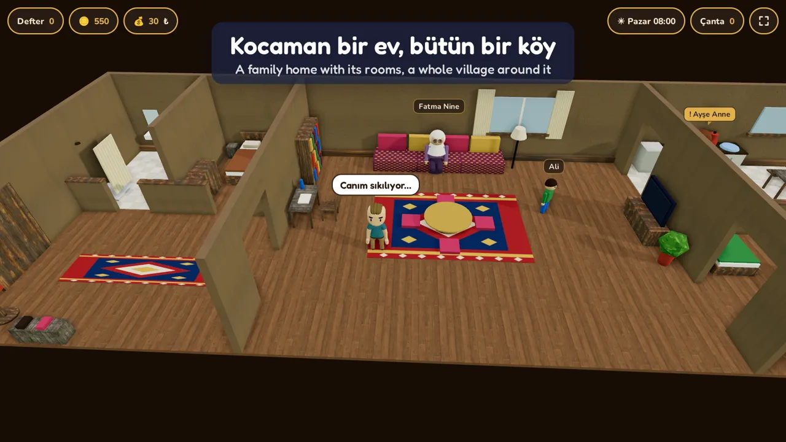
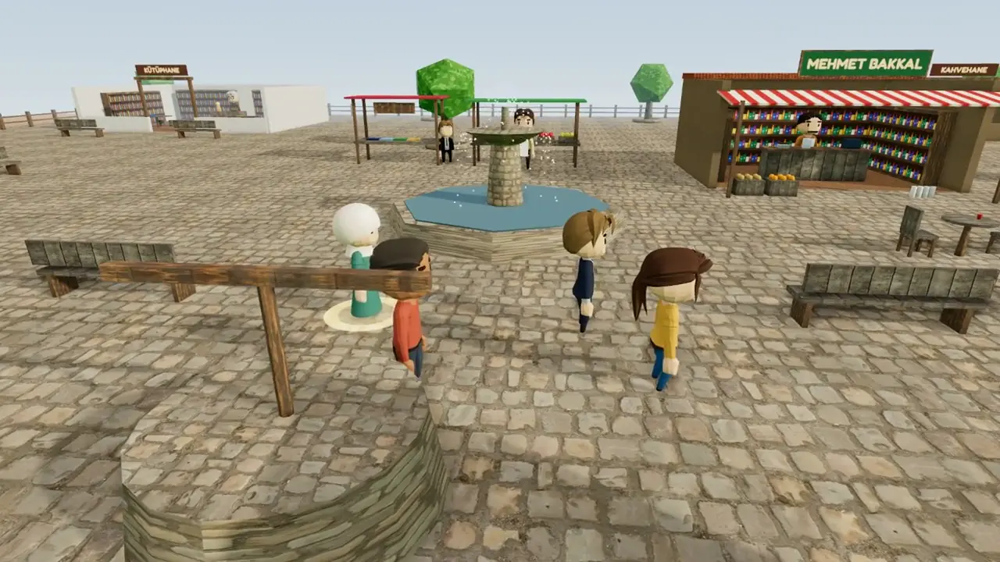
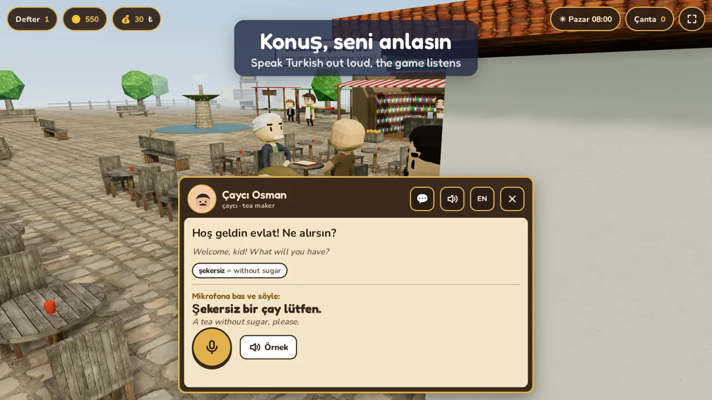
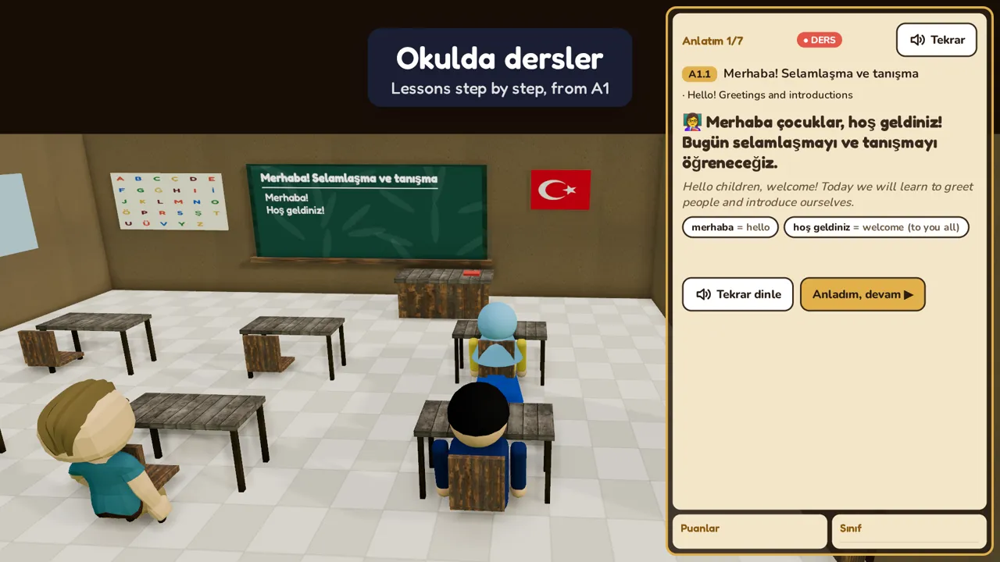
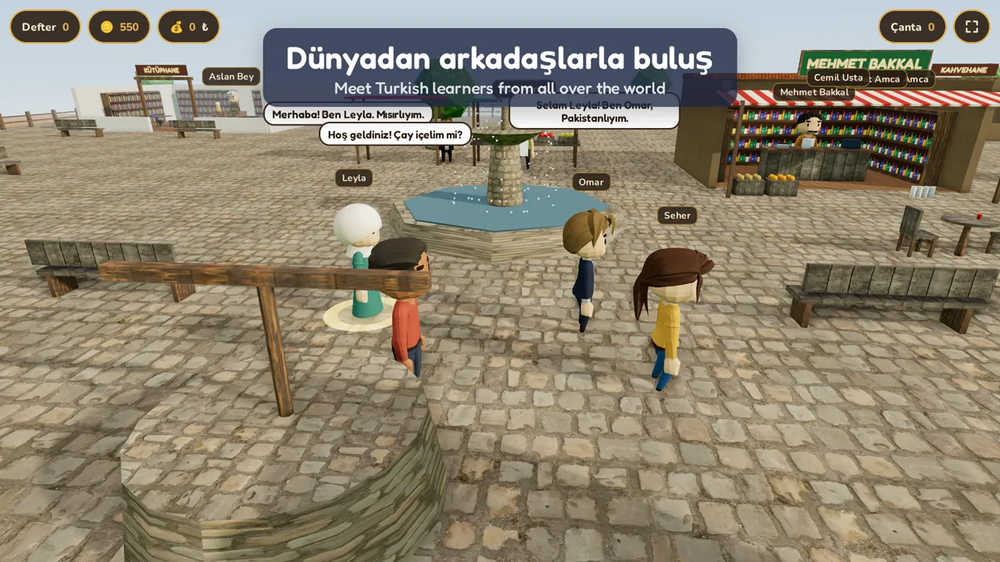
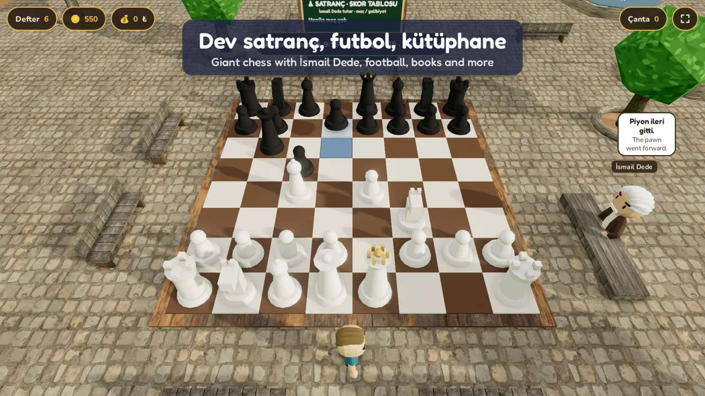
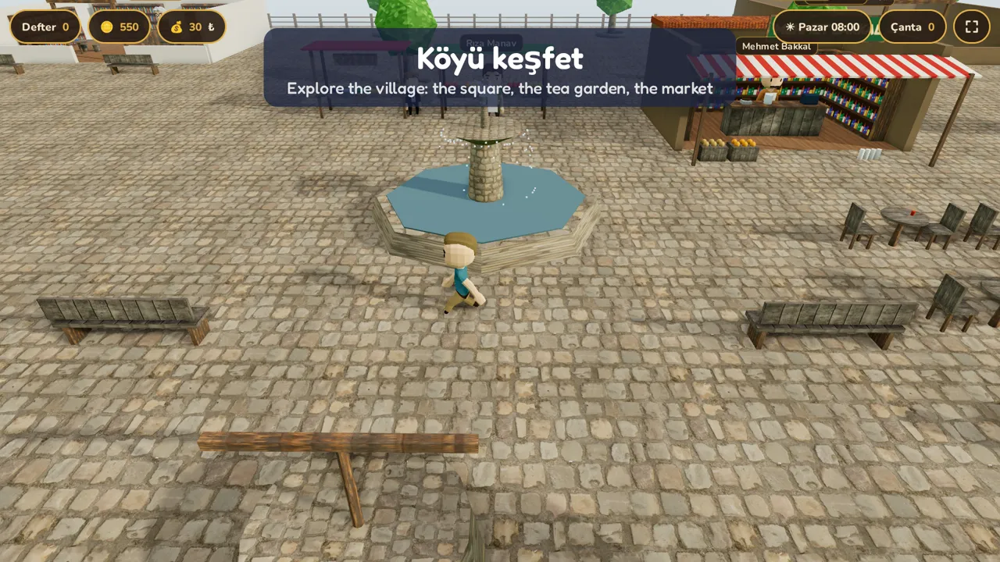

01







Günaydın Ahmet! Neyin var? Neden üzgünsün?
Good morning Ahmet! What's wrong? Why are you sad?
صباح الخير يا أحمد! ما بك؟ لماذا أنت حزين؟
صبح بخیر احمد! کیا ہوا؟ اداس کیوں ہو؟
¡Buenos días, Ahmet! ¿Qué te pasa? ¿Por qué estás triste?
Bonjour Ahmet ! Qu’est-ce qui ne va pas ? Pourquoi es-tu triste ?